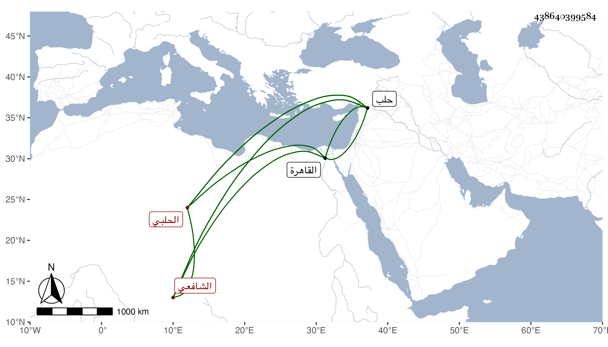

0902Sakhawi.DawLamic.ITO20230111-ara1.EIS1600.438640399584
Biography ID: 438640399584
229
أبو بكر بن محمد بن عمر بن أبي بكر بن محمد بن أحمد الشرف بن الضيا ابن المصيبي الحلبي الشافعي الماضي أبوه وأخوه عمر . ولد في صفر سنة أربع وعشرين وثمانمائة بحلب ونشأ بها فحفظ القرآن عند الشيخ عبيد البابي وصلى به في الجامع الكبير على العادة والمنهاجين الفرعي والأصلي والكافية والتلخيص وعرض على البرهان الحلبي بل كان هو الذي يصحح له قبل حفظه وابن خطيب الناصرية والزين بن الخرزي والحمصي وآخرين واشتغل ببلده وفضل ونظم ونثر ومن شيوخه في القاهرة ابن الهمام بل أخذ عن شيخنا والبرهان الحلبي وآخرين وسمع معنا بحلب في سنة تسع وخمسين على ابن مقبل وحليمة ابنة الشهاب الحسيني وغيرهما ودرس بالعصرونية والظاهرية والسيفية تلقى الأولى عن الجمال الباعوني والثانية عن أبي جعفر بن الضيا والثالثة عن والده وناب في القضاء عن ابن خطيب الناصرية فمن بعده وفي كتابة السربل استقل بهامدة وكذا ولي وكالة بيت المال وإفتاء دار العدل ثم تركهما كل هذا ببلده . مات بها شهيدا بالطاعون في رمضان سنة ثلاث وستين رحمه الله .
